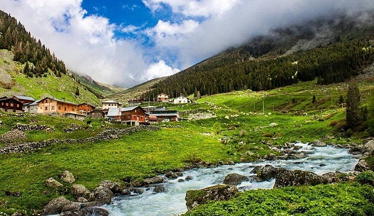

Çamlıhemşin, Rize'nin bir ilçesidir.
İlçenin eski adı olan "Vica" ya da "Vija", Lazcada "maden su, ılıca, kaplıca" anlamına gelir ve Kartvel kökenli formdan gelir.
Çamlıhemşin'in eski adı Vicealtı'dır. Cumhuriyetin ilanından önce 1922 yılında karakol merkezi oluşturuldu. 1953'te ise Ardeşen ilçe olunca Vicealtı, Çamlıca adı ile bu ilçeye bağlandı. 1954'te bucak binası yapıldı. 1955'te belediye kuruldu. 27 Haziran 1957'de yürürlüğe giren 7033 sayılı kanun ile Çamlıhemşin adını alarak ilçe haline getirildi. İlçenin kuruluşu 1960'larda tamamlandı
İklimi her mevsim yağışlıdır. Sıcaklık kışın -7 dereceye kadar düşmekte, yazın ise 25 dereceye kadar yükselmektedir. Günlük en yüksek sıcaklık farkı 23,6 derece olmaktadır. Yıllık metrekareye düşen yağış miktarı 245 cm³'ü bulmaktadır. Havadaki nem oranı ise %10 ile %97 arasında değişmektedir.